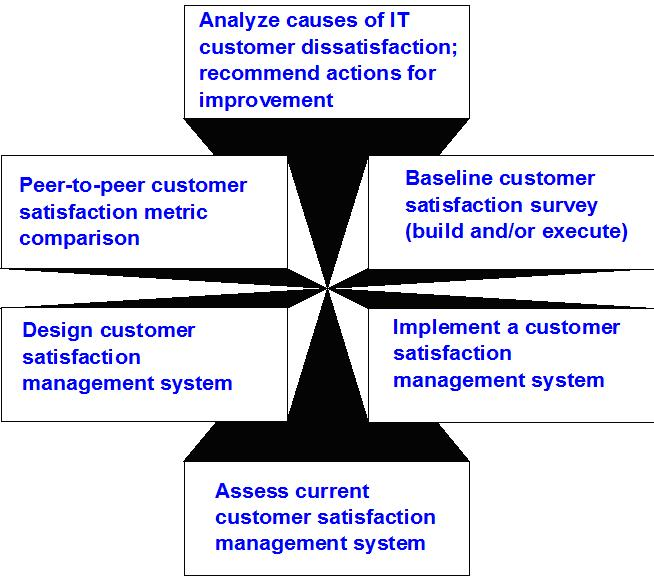

| Artifact: Customer Satisfaction Assessment (ART 0659) |
 |
|
Purpose
| Customer Satisfaction Assessments are conducted to gain an understanding of the degree of a customer's satisfaction with
the specific subject area of the engagement. In general the goal of knowing a customer's degree of satisfaction at the
beginning of an engagement provides a baseline from which to improve. While assessing satisfaction at the end of an
engagement provides a validation of the perceived effectiveness and value received for the engagement. In addition,
quantitative customer satisfaction figures are useful tools for attracting and retaining customers.
|
Description
| Main Description | This assessment does not presume who the provider is. The provider may be internal to the customer's organization, or an external vendor, or IBM. Generally for the delivery of satisfaction to the customer, the provider must:
|
|---|
Illustrations
Key Considerations
Various approaches are available for collecting customer feedback. Experts in designing instruments or in statistical analysis may need to be included on the engagement team. Consideration must be given to:
The IBM Consulting Group offers a comprehensive set of services related to customer satisfaction:  |
Tailoring
| Impact of not having | Where the gathering of other quantifiable results is not feasible, or may potentially require measurements over a longer period of time than can be accommodated in the engagement, the use of Customer Satisfaction Assessments may be the only way to gauge the success of the engagement. |
|---|---|
| Reasons for not needing | If the engagement supports the creation of quantifiable customer value metrics, the importance of customer satisfaction is considerably lessened. |
More Information
| Guidelines | |
|---|---|
| Estimation Considerations |
| © Copyright IBM Corp. 1987, 2012 All Rights Reserved Property of IBM These materials are intended only for use as part of an IBM engagement |